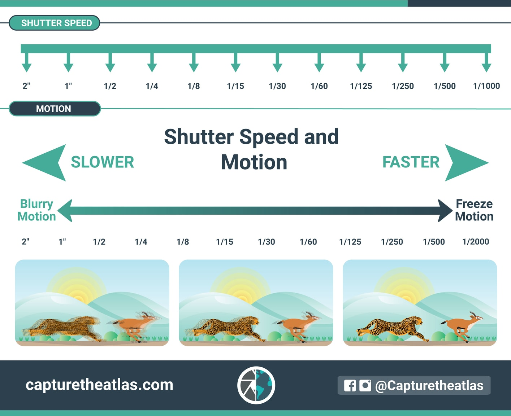
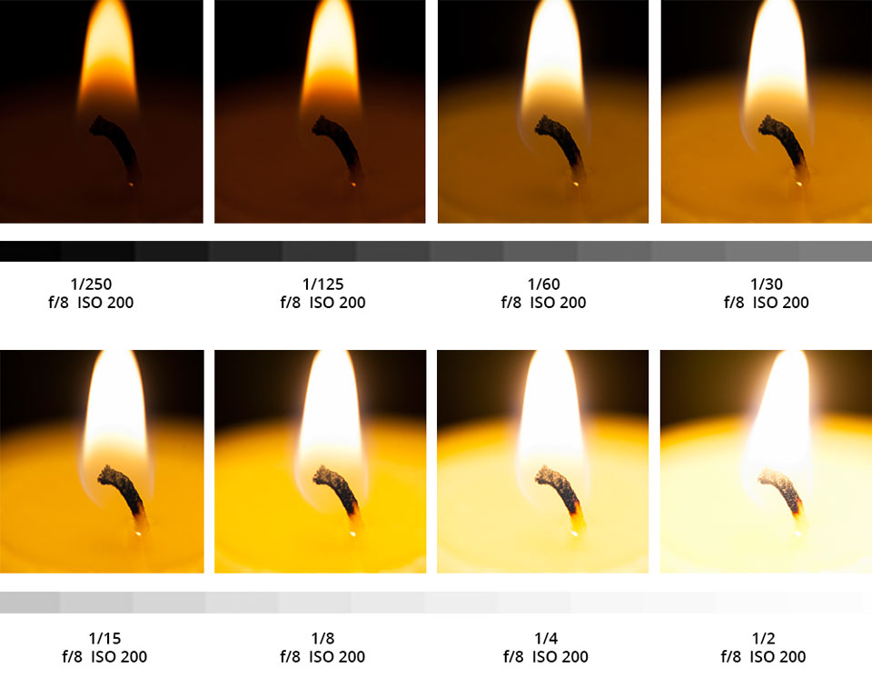
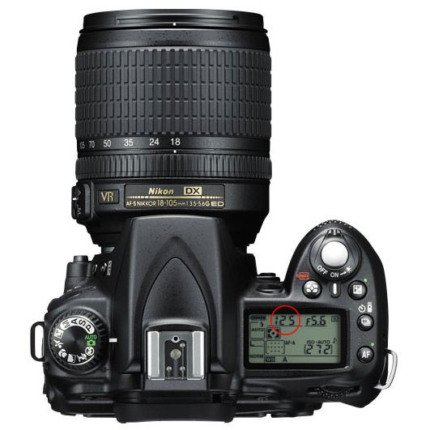
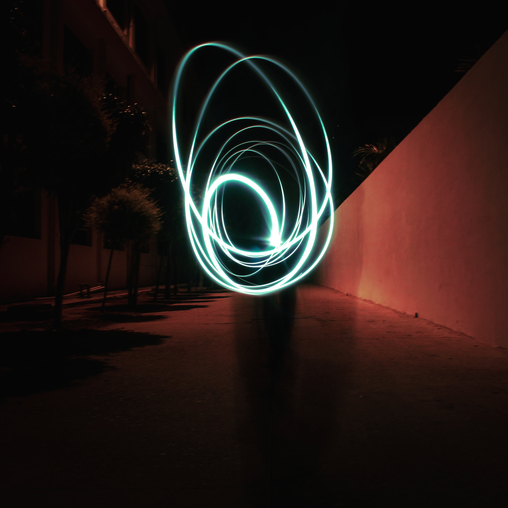

Introduction To Shutter Speed

One of the three most important settings in photography is Shutter Speed, the other two being Aperture and
ISO. Shutter speed is responsible for two particular things: changing the brightness of your photo, and
creating dramatic effects by either freezing action or blurring motion. In the following article, we will
explain everything you need to know about it in very simple language.

From this frame you can easily relate the concept of shutter speed, When you increase the shutter speed it will absorb more light and if you are decreasing the value of shutter speed sensor will sense less light.
Shutter speed exists because of camera shutter – which is a curtain in front of the camera sensor that stays closed until the camera fires. When the camera fires, the shutter opens and fully exposes the camera sensor to the light that has passed through your lens. After the sensor is done collecting the light, the shutter closes immediately, stopping the light from hitting the sensor. The button that fires the camera is also called “shutter” or “shutter button,” because it triggers the shutter to open and close.
What is Shutter Speed?
Shutter speed is the length of time camera shutter is open, exposing light onto the camera sensor. Essentially, it’s how long your camera spends taking a photo. This has a few important effects in how your images will appear.
How to Set Shutter Speed?
Most cameras handle shutter speeds automatically by default. When the camera is set to “Auto” mode, the shutter speed is selected by the camera without your input (and so are aperture and ISO). However, you can still set shutter speed manually if necessary:
1.By setting the camera to “Shutter Priority” mode, you choose the shutter speed, and the camera automatically selects the aperture.
2.By setting the camera to “Manual” mode, you choose both shutter speed and aperture manually.
Within both of these modes, you can choose to set ISO manually or automatically.
In most cases, we recommend letting the camera select the correct shutter speed for you. Still, watch to be certain that you aren’t introducing too much motion blur in a photo (or freezing motion that you want to be blurred). I cover more of this in an article on camera modes, but I tend to shoot in “Aperture Priority” mode 95% of the time, letting the camera calculate the shutter speed automatically.
How to Find Shutter Speed?
Do you know how to find what your camera shutter speed is set to? It is typically very easy to find it. On cameras that have a top panel, the shutter speed is typically located on the top left corner, as circled:

If your camera does not have a top LCD, like some entry-level DSLRs, you can look through the viewfinder, where
you will see the shutter speed on the bottom-left side. And if your camera has neither a top LCD nor a
viewfinder, like many mirrorless cameras, you can see your shutter speed simply by looking on the back screen.
On most cameras, shutter speed will not show up directly as a fraction of a second – it will typically be a
regular number. When the shutter speed is longer than or equal to one second, you will see something like 1” or
5” (with the quotation sign to indicate a full second).
If you still cannot find the shutter speed, set your camera to “Aperture Priority” mode, and make sure that you
have turned “AUTO ISO” off. Then, start pointing around your camera from dark to bright areas. The number that
changes will be your shutter speed.
How Shutter Speed is Measured
Shutter speeds are typically measured in fractions of a second, when they are under a second. For example 1/4
means a quarter of a second, while 1/250 means one two-hundred-and-fiftieth of a second (or four
milliseconds).
Most modern DSLRs and mirrorless cameras can handle shutter speeds of up to 1/4000th of a second, while some can
handle much quicker speeds of 1/8000th of a second and faster. On the other hand, the longest available shutter
speed on most DSLRs or mirrorless cameras is typically 30 seconds. You can use a longer shutter speed by using
external remote triggers, if necessary.
